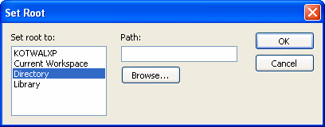

The Library painter is designed for working with PowerBuilder libraries.
In the Tree view, you can expand items and see the folders, libraries, or objects they contain. The List view displays the contents of a selection in the Tree view.
 To expand or collapse an item in the Tree view:
To expand or collapse an item in the Tree view:
Double-click the item.
If the item contains libraries or objects, they display in the List view.
 To display the contents of an item in the List
view:
To display the contents of an item in the List
view:
Select the item in the Tree view or double-click the item in the List view.
You can drag and drop items to expand them and see the contents.
If you drag an item from a Tree view or List view to a List view, the List view sets the item as the root and displays its contents.
If you drag an item from a Tree view or List view to a Tree view, the Tree view expands to display the dragged item.
For example, you can drag a library from the Tree view and drop it in the List view to quickly display the objects the library contains in the List view. If you are using one Tree view and multiple List views, you can drag a specific library from the Tree view to each List view so each List view contains the contents of a specific library.
For information about using drag and drop to copy or move items, see "Copying, moving, and deleting objects".
Like other painters, the Library painter has a pop-up menu that provides options that apply to the selected item in the Tree view or the List view. For example, from a library's pop-up menu, you can delete, optimize, or search the library, print the directory, specify the objects that display in the library, and import objects into it.
The actions available from an object's pop-up menu depend on the object type. For PowerBuilder objects that you can work with in painters, you can edit the object in a painter or in the Source editor, copy, move, or delete the object, export it to a text file, search it, regenerate it, or send it to a printer. You can also preview and inherit from some objects. For most of these actions, the object must be in a library in your current workspace.
Actions available from the pop-up menus are also available on the Entry menu on the menu bar.
You can control whether to display the last modification date, compilation date, size, SCC version number, and comments (if a comment was created when an object or library was created) in the List view.
The version number column in the Library painter list view remains blank if the source control system for your workspace does not support the PowerBuilder extension to the SCC API. If your source control system supports this extension and if you are connected to source control, you can override the SCC version number of a PowerScript object in the local copy directory through the property sheet for that object.
For more information about listing the SCC version number and overriding it through the PowerBuilder interface, see "Extension to the SCC API".
 To control the display of columns in the List
view:
To control the display of columns in the List
view:
Select Design>Options from the menu bar.
On the General tab page, select or clear these display items: Modification Date, Compilation Date, Sizes, SCC Version Number, and Comments.
In the List view, you can select one or more libraries or objects to act on.
 To select multiple entries:
To select multiple entries:
In the List view, use Ctrl+Click (for individual entries) and Shift+Click (for a group of entries).
 To select all entries:
To select all entries:
In the List view, select an object and click the Select All button on the PainterBar.
You can change what objects display in expanded libraries.
 Settings are remembered PowerBuilder records your preferences in the Library section
of the PowerBuilder initialization file so that the next time you
open the Library painter, the same information is displayed.
Settings are remembered PowerBuilder records your preferences in the Library section
of the PowerBuilder initialization file so that the next time you
open the Library painter, the same information is displayed.
In the Tree and List views, the Library painter displays all objects in libraries that you expand, as well as targets, workspaces, folders, and files. You can specify that the Library painter display only specific kinds of objects and/or objects whose names match a specific pattern. For example, you can limit the display to only DataWindow objects, or limit the display to windows that begin with w_emp.
 To restrict which objects are displayed:
To restrict which objects are displayed:
Select Design>Options from the menu bar and select the Include tab.
Specify the display criteria:
Click OK.
The Options dialog box closes.
In the Tree view, expand libraries or select a library to display the objects that meet the criteria.
In either the Tree view or the List view, you can override your choice of objects that display in all libraries by selecting a library, displaying the library's pop-up menu, and then clearing or selecting items on the list of objects.
A library is created automatically when you create a new PowerScript target, but you can create as many libraries as you need for your project in the Library painter.
 To create a library:
To create a library:
Click the Create button or select Entry>Library>Create from the menu bar.
The Create Library dialog box displays showing the current directory and listing the libraries it contains.
Enter the name of the library you are creating and specify the directory in which you want to store it.
The file is given the extension .PBL.
Click Save.
The library properties dialog box displays.
Enter any comments you want to associate with the library.
Adding comments to describe the purpose of a library is important if you are working on a large project with other developers.
Click OK.
PowerBuilder creates the library.
 To delete a library:
To delete a library:
In either the Tree view or the List view, select the library you want to delete.
Select Entry>Delete from the menu bar or select Delete from the pop-up menu.
 Restriction You cannot delete a library that is in the current target's
library search path.
Restriction You cannot delete a library that is in the current target's
library search path.
The Delete Library dialog box displays showing the library you selected.
Click Yes to delete the library.
The library and all its entries are deleted from the file system.
 Creating and deleting libraries at runtime You can use the LibraryCreate and LibraryDelete functions
in scripts to create and delete libraries. For information about
these functions, see the PowerScript Reference
.
Creating and deleting libraries at runtime You can use the LibraryCreate and LibraryDelete functions
in scripts to create and delete libraries. For information about
these functions, see the PowerScript Reference
.
In either the Tree view or the List view, you can control what displays when you expand a drive or folder. An expanded drive or folder can display folders, workspaces, targets, files, and libraries.
 To control display of the contents of drives and
folders:
To control display of the contents of drives and
folders:
In either the Tree or List view, select a drive or folder, select Show from the pop-up menu, and select or clear items from the cascading menu.
In PowerBuilder, the current library is the library that contains the object most recently opened or edited. That library becomes the default for Open and Inherit. If you click the Open or Inherit button in the PowerBar, the current library is the one selected in the Libraries list.
You can display the current library in the Library painter.
 To display objects in the current library:
To display objects in the current library:
Click in the Tree view or the List view.
Click the Display Most Recent Object button on the PainterBar or select Most Recent Object from the View menu.
The library that contains the object you opened or edited last displays in the view you selected with the object highlighted.
You can open and preview objects in the current workspace.
PowerBuilder objects, such as windows and menus, are opened only if they are in a PBL in the current workspace.
 To open an object:
To open an object:
In either the Tree view or the List view, double-click the object, or select Edit from the object's pop-up menu.
PowerBuilder takes you to the painter for that object and opens the object. You can work on the object and save it as you work. When you close it, you return to the Library painter.
The Library painter allows you to open most of the different file types it displays. When you double-click on an object, PowerBuilder attempts to open it using the following algorithm:
You can run windows and preview DataWindow objects from the Library painter.
 To preview an object in the Library painter:
To preview an object in the Library painter:
Select Run/Preview from the object's pop-up menu.
As the needs of your target change, you can rearrange the objects in libraries. You can copy and move objects between libraries or delete objects that you no longer need.
 To copy objects using drag and drop:
To copy objects using drag and drop:
In the Tree view or the List view, select the objects you want to copy.
Drag the objects to a library in either view. If the contents of a library are displaying in the List view, you can drop it there.
PowerBuilder copies the objects. If an object with the same name already exists, PowerBuilder prompts you and if you allow it, replaces it with the copied object.
 To move objects using drag and drop:
To move objects using drag and drop:
In the Tree view or the List view, select the objects you want to move.
Press and hold Shift and drag the objects to a library in either view. If the contents of a library are displaying in the List view, you can drop it there.
PowerBuilder moves the objects and deletes them from the source library. If an object with the same name already exists, PowerBuilder prompts you and if you allow it, replaces it with the moved object.
 To copy or move objects using a button or menu
item:
To copy or move objects using a button or menu
item:
Select the objects you want to copy or move to another library.
The Select Library dialog box displays.
Select the library to which you want to copy or move the objects and click OK.
 To delete objects:
To delete objects:
Select the objects you want to delete.
You are asked to confirm the first deletion.
 Being asked for confirmation By default, PowerBuilder asks you to confirm each deletion.
If you do not want to have to confirm deletions, select Design>Options
to open the Options dialog box for the Library painter and clear
the Confirm on Delete check box in the General tab page.
Being asked for confirmation By default, PowerBuilder asks you to confirm each deletion.
If you do not want to have to confirm deletions, select Design>Options
to open the Options dialog box for the Library painter and clear
the Confirm on Delete check box in the General tab page.
Click Yes to delete the entry or Yes To All to delete all entries. Click No to skip the current entry and go on to the next selected entry.
In either the Tree view or the List view, you can set the root location of the view.
 To set the root of the current view:
To set the root of the current view:
In either view, select View>Set Root from the menu bar or select Set Root from the pop-up menu to display the Set Root dialog box.

If you want the root to be a directory or library, type the path or browse to the path.
In the System Tree, the default root is the current workspace. If you prefer to work in the Library painter, you may find it convenient to set the root to the current workspace. Using the current workspace as your root is particularly helpful if you are using many libraries in various locations, because they are all displayed in the same tree.
You can also set a new root by moving back to where you were before, moving forward to where you just were, or for the List view, moving up a level.
 To move back, forward, or up one level:
To move back, forward, or up one level:
The name of the location you are moving back to or forward to is appended to Back and Forward.
You can use comments to document your objects and libraries. For example, you might use comments to describe how a window is used, specify the differences between descendent objects, or identify a PowerBuilder library.
You can associate comments with an object or library when you first save it in a painter and add or modify comments in the System Tree or Library painter. If you want to modify comments for a set of objects, you can do so quickly in the List view.
 To modify comments for multiple objects:
To modify comments for multiple objects:
In the List view, select the objects you want.
Select Entry>Properties from the menu bar or select Properties from the pop-up menu.
PowerBuilder displays the Properties dialog box. The information that displays is for one of the objects you selected. You can change existing comments, or, if there are no comments, you can enter new descriptive text.
Click OK when you have finished editing comments for this object.
If you do not want to change the comments for an object, click OK. The next object displays.
Enter comments and click OK for each object until you have finished.
If you want to stop working on comments before you finish with the objects you selected, click Cancel. The comments you have entered until the most recent OK are retained and display in the List view.
 To modify comments for a library:
To modify comments for a library:
Select the library you want.
Click the Properties button or select Library from the pop-up menu.
Add or modify the comments.